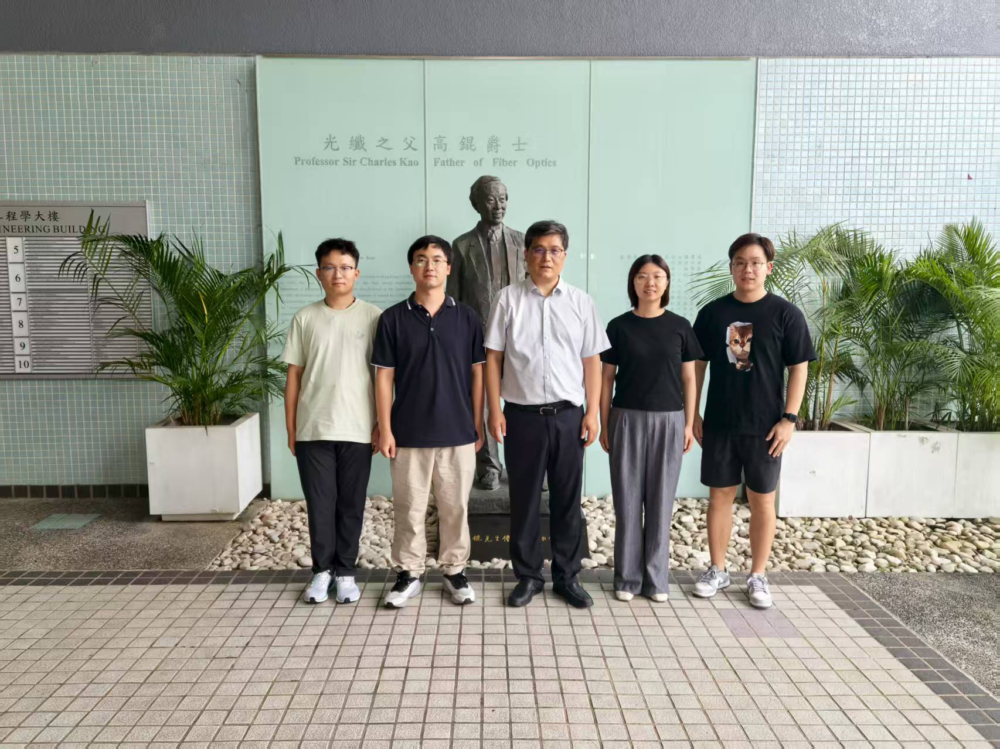
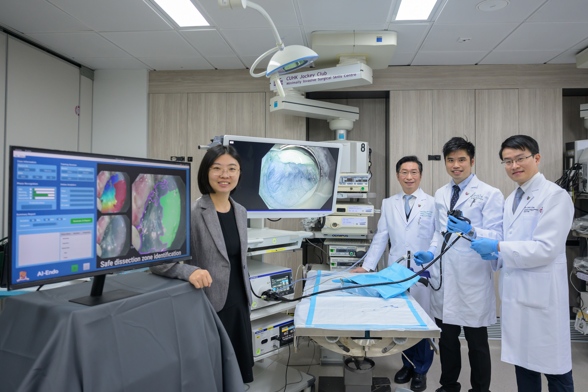
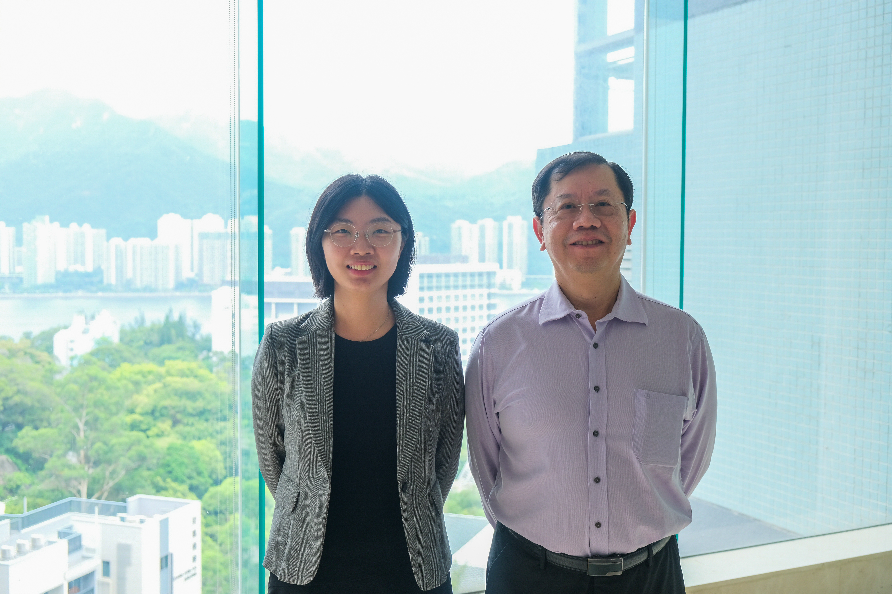
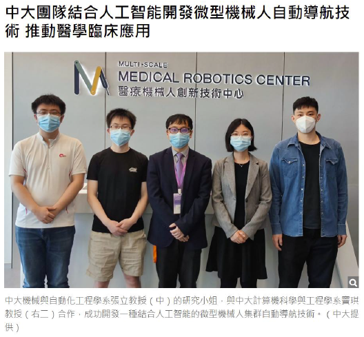
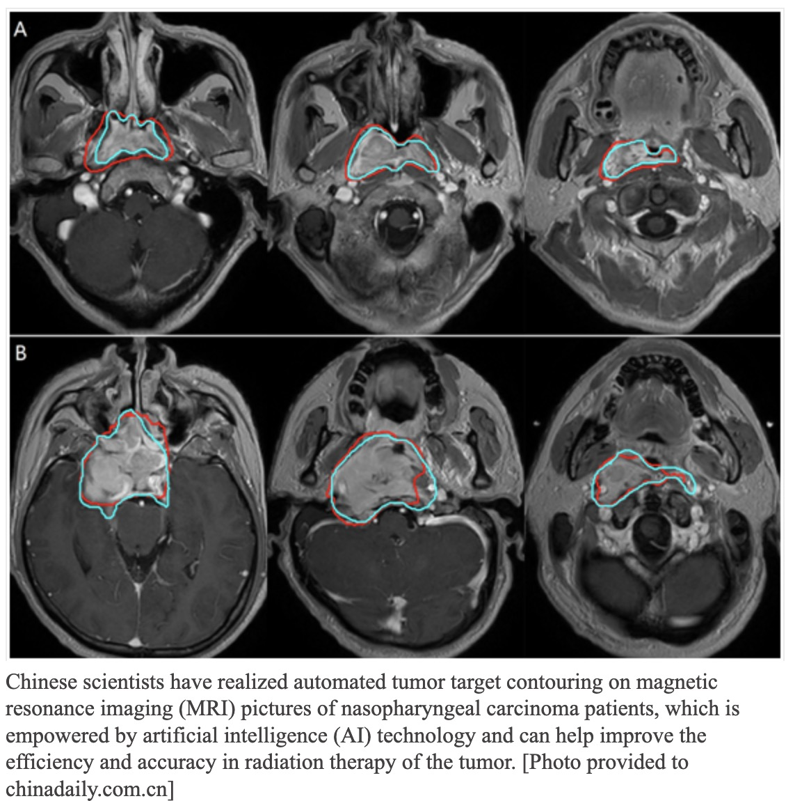
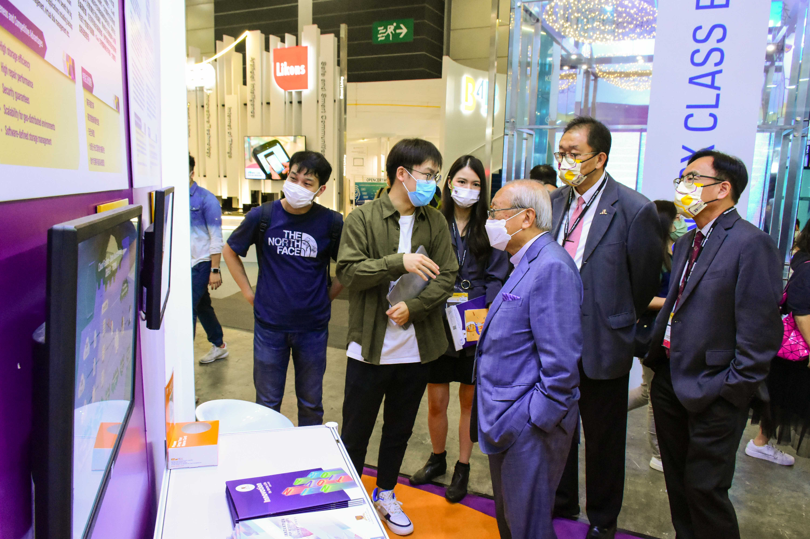
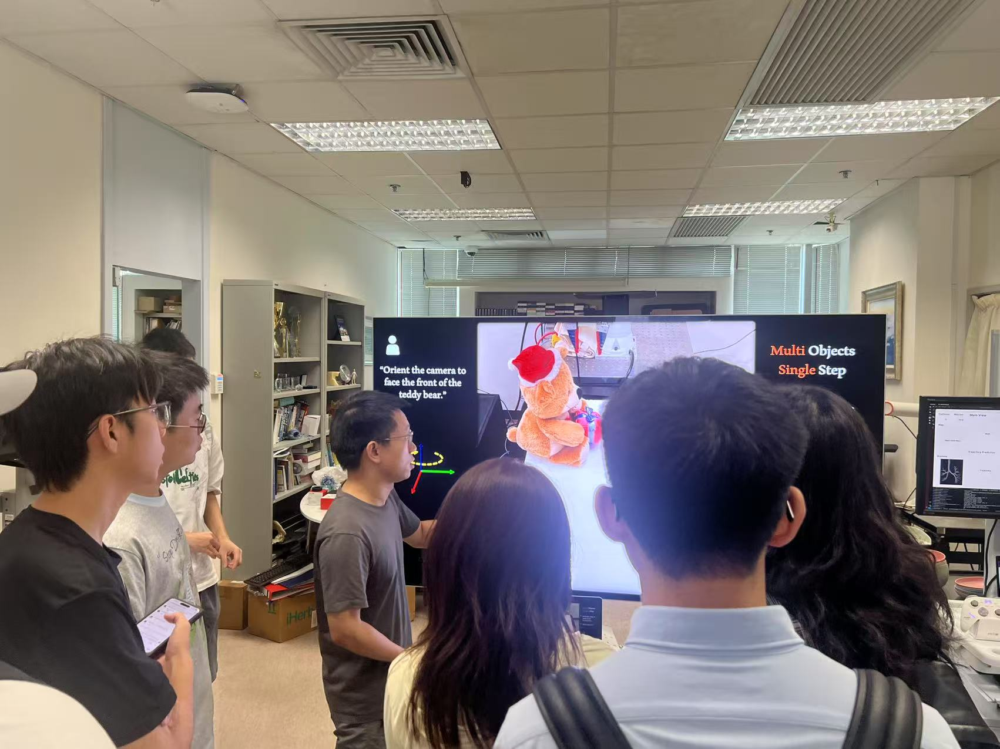
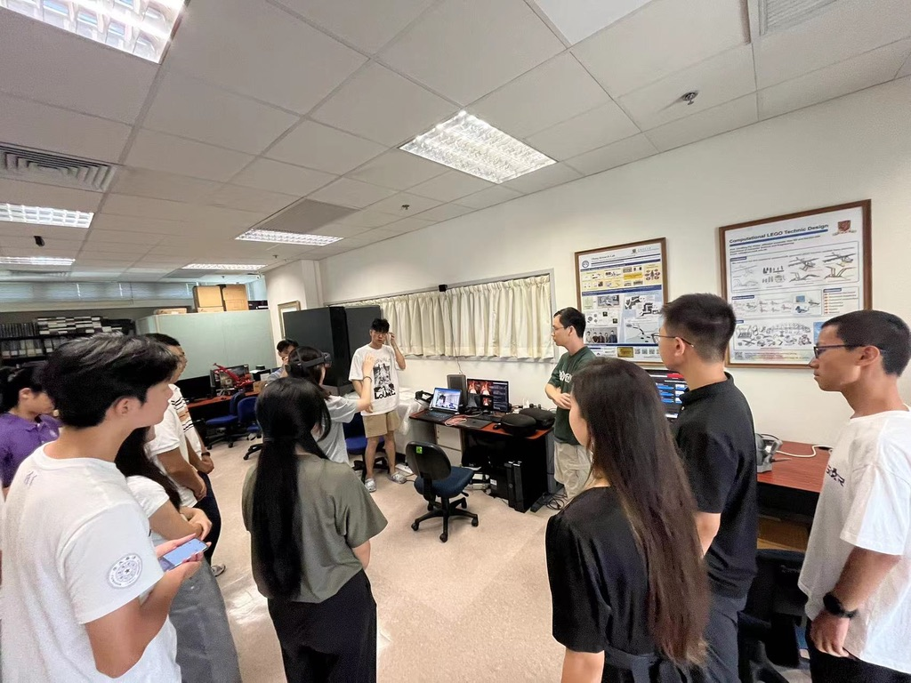
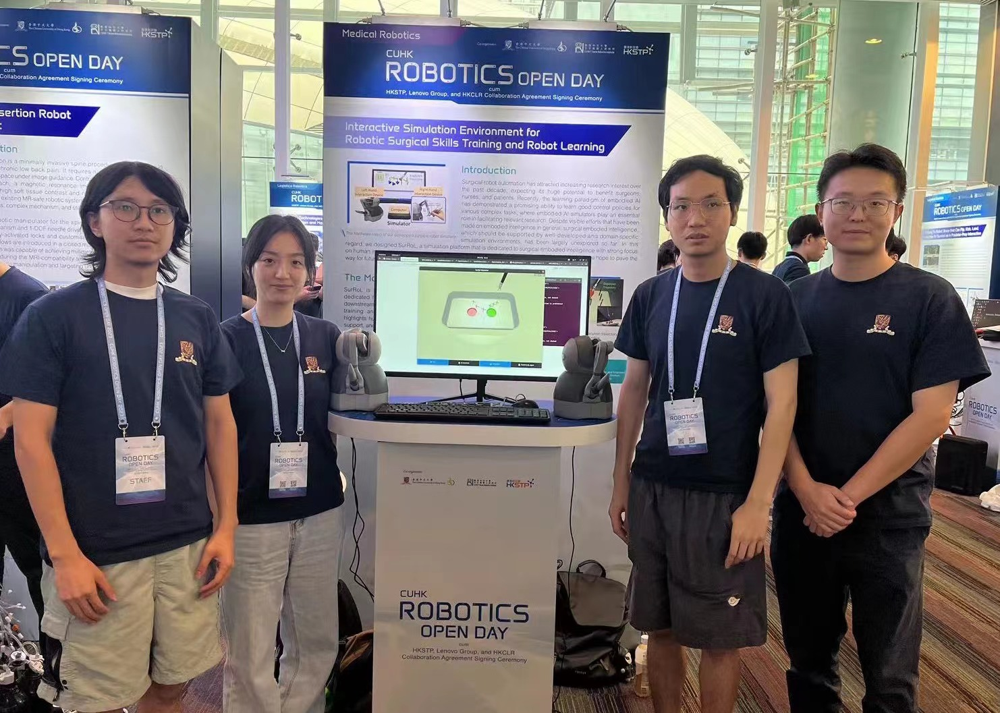

Distinguished Visitors

Visit by Professor Daoqiang Zhang's team from Nanjing University of Aeronautics and Astronautics, July 2025

Visit by Prof. Peter Kazanzides from Johns Hopkins University, June 2025

Prof. Sophia Bano, Prof. Daniel Elson and Prof. Ferdinando Rodriguez y Baena (from left to right) visited our lab in May 2025
Prof. Nassir Navab and Prof. M. Ali Nasseri (TUM), and Assoc. Prof. Michael Yip (UCSD) visited in May 2025.

Visit and invited talk by Prof. Nicolas Padoy from the University of Strasbourg, Mar 2025.
Visit by Prog. Russell H. Taylor from the Johns Hopkins University.
Publicity


CUHK research team has established an AI surgical assistance platform for endoscopic submucosal dissection (ESD), AI-Endo
The Chinese University of Hong Kong’s (CUHK) Faculty of Medicine (CU Medicine) has recently completed two studies on AI-assisted endoscopic technology, proving it has the potential to enhance performance in the diagnosis and treatment of gastrointestinal (GI) cancer, as well as to assist doctor training in endoscopy.

CUHK Receives Three Ministry of Education Higher Education Outstanding Scientific Research Output Awards
Three scientific research projects conducted by researchers from The Chinese University of Hong Kong (CUHK) have received Higher Education Outstanding Scientific Research Output Awards (Science and Technology) 2022 from the Ministry of Education (MOE), including a first-class and two second-class awards in natural sciences.

CUHK AI technology navigates microrobot swarm in complex environments inside human body
The Chinese University of Hong Kong (CUHK)’s engineering team has recently built an artificial intelligence (AI) navigation system that can make millions of microrobots behave like a bee swarm, autonomously reconfiguring their motion and distribution according to environmental changes, such as going around obstacles inside a human body.


CUHK featured research on AI for detecting COVID-19 infections in CT
Radiological imaging complements clinical testing in COVID-19 diagnosis and helps assess disease severity and progression. The team in close collaboration with engineering and clinical experts has developed an accurate AI system for automated detection of COVID-19 lesions from CT images, which can provide immediately available results, alleviating the burden of clinicians in interpreting images.

Featured as Woman in Science by RSIPvision Computer Vision News international magazine
This interview was conducted to highlight advances in AI for healthcare, focusing on research in medical image analysis. It discusses topics such as algorithm development, clinical deployment, interdisciplinary collaboration, and the future of AI-assisted diagnosis and surgery. The conversation also covers academic motivation and the impact of technology in medicine.

AI used to pinpoint head and neck cancer treatment
In collaboration with the Chinese University of Hong Kong, the center, based in the provincial capital city, Guangzhou, said it has realized automated tumor target contouring on magnetic resonance imaging (MRI) pictures of carcinoma patients thanks to AI technology.
CUHK Updates, An Eagle Eye for Smart Diagnoses
With medical images playing an increasingly critical role in diagnoses, the workload of those responsible for the interpretation of the images will only get heavier. To relieve their workload and to enhance diagnostic accuracy, the research team led by Prof. Heng Pheng-Ann has developed an artificial intelligence (AI) platform for automated medical image analysis.

CUHK in Focus, Sun Dong recounts his days at CUHK and pins high hopes on his alma mater
Sun Dong, as the Secretary for Innovation, Technology and Industry, returned to his alma mater CUHK for a visit. He is given a demonstration of a mock simulation training system for robotic surgery at the CUHK T Stone Robotics Institute.

Innovative CUHK research receives grant of over $50 million from RGC Theme-based Research Scheme
A research team led by Professor Pheng Ann Heng from CUHK has received over HK$50 million to establish a world-leading Institute of Medical Intelligence and XR, aiming to advance AI and XR for next-generation precision healthcare.

Exhibiting at the International ICT Expo 2022.

2024 Shenzhen International High-Performance Medical Devices Exhibition Features AR Remote-Assisted Robotic Surgery System.
Award
IEEE ICRA 2021 Best Paper Award in Medical Robotics.
Hong Kong Innovation Day cum Innovation Awards Competition First Runner-up.
Student achievement & activities

The demonstration was provided for Professor Wan Liang's Team from Tianjin University in July 2025.

Students from Tongji University's Summer School visited in July 2025

Students from Tsinghua University visited for the Remote Surgery Assistance System AR Demo.

The demonstration was provided at the Robotic Open Day.